prep time: 45 min
cook time: 22 min
total time: 5 hours, 30 min
yield: 12 servings
ingredients
- 2 1/2 cups cake flour
- 2 teaspoons baking powder
- 1/2 teaspoon baking soda
- 1 teaspoon salt
- 3/4 cup unsalted butter, softened to room temperature
- 1 3/4 granulated sugar
- 5 large eff whites, at room temperature
- 1/2 cup sour cream, at room temperature
- 1 tablespoon pure vanilla extract
- 1 cup of whole milk, at room temperature
- 2 cups cold heavy cream or heavy whipping cream
- 1/3 cup confectioners' sugar
- 1/2 teaspoon baking soda
- 1 teaspoon pure vanilla extract
- 2 cups fresh mixed berries
tools
-

Stand Mixer or Hand-held Mixer with Whisk Attachment
-

9in cake pan
instructions
Step 1:

Make the cake: Preheat the oven to 350°F (177°C). Grease three 8-inch or 9-inch cake pans, line with parchment paper rounds, then grease the parchment paper. Parchment paper helps the cakes seamlessly release from the pans. I recommend using nonstick spray for greasing. I also recommend 8 inch cake pans as the 9 inch cakes will be pretty thin.
Step 2:

Whisk the cake flour, baking powder, baking soda, and salt together. Set aside.
Step 3:

Using a handheld or stand mixer fitted with a whisk attachment, beat the butter on high speed until smooth and creamy, about 1 minute. Add the sugar and beat on high speed for 2 minutes until creamed together. Scrape down the sides and up the bottom of the bowl with a rubber spatula as needed. Add the egg whites. Beat on high speed until combined, about 2 minutes. Then beat in the sour cream and vanilla extract. Scrape down the sides and up the bottom of the bowl as needed. With the mixer on low speed, add the dry ingredients until just incorporated. With the mixer still running on low, slowly pour in the milk until combined. Do not overmix. You may need to whisk it all by hand to make sure there are no lumps at the bottom of the bowl. The batter will be slightly thick.
Step 4:

Pour batter evenly into cake pans. Bake for around 22-24 minutes or until the cakes are baked through. To test for doneness, insert a toothpick into the center of the cake. If it comes out clean, it is done. Allow cakes to cool completely in the pans set on a wire rack. The cakes must be completely cool before assembling.
Step 5:

Make the whipped cream: Using a hand mixer or a stand mixer fitted with a whisk attachment, whip the heavy cream, confectioners’ sugar, vanilla extract, and almond extract on medium-high speed until medium peaks form, about 3-4 minutes. Medium peaks are between soft/loose peaks and stiff peaks and are the perfect consistency for decorating cakes. Use immediately or cover tightly and chill in the refrigerator for up to 24 hours. Yields about 4 cups.
Step 6:

Assemble cake: If cooled cakes are domed on top, use a large serrated knife to slice a thin layer off the tops to create a flat surface. This is called “leveling” the cakes. (Discard thin layer or crumble over ice cream.) Place 1 cake layer on your cake stand, cake turntable, or serving plate. Evenly spread 1 heaping cup of whipped cream on top. I always use an icing spatula to spread. Arrange a single layer of mixed berries on top. Top with 2nd cake layer. Spread another 1 heaping cup of whipped cream on top, then a single layer of berries. Top with 3rd cake layer. Spread remaining whipped cream on top and garnish with fresh berries. Add a dusting of confectioners’ sugar on the berries, if desired, and/or garnish with fresh florals.
Step 7:

Chill the assembled cake, uncovered, for at least 2 hours and up to 1 day before slicing and serving. This time in the refrigerator helps the whipped cream thicken and makes cutting neater and easier. If chilling for longer than a few hours, you can carefully cover it with plastic wrap or use a cake carrier for storing in the refrigerator (what I always store my cakes in!). *Note that the berries could begin to release their juices if kept in the refrigerator for longer than 2 hours. For cutting, I recommend using your sharpest knife and cutting slowly.
Step 8:

Cover leftover cake tightly and store in the refrigerator for up to 5 days.